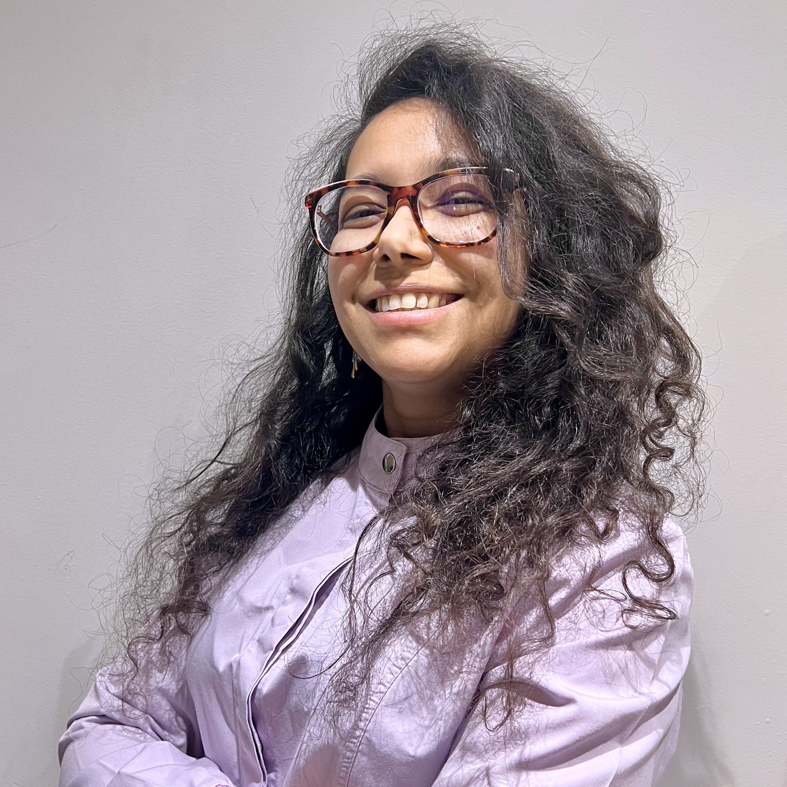

Studio Odontoiatrico Aramini, Voghera
Attività clinica con focus su prevenzione, restauri in composito, terapie canalari, sbiancamento professionale, e trattamenti per il benessere quotidiano del paziente. Gestione di prime visite, urgenze e piani di cura personalizzati.Smart Dental Clinic, Sesto San Giovanni
Esecuzione di restauri estetici, terapie endodontiche, trattamenti preventivi, sigillature e valutazioni cliniche complete. Supporto nella diagnosi radiografica e nella gestione delle esigenze dei pazienti.CLD - Odontoiatria Specialistica, Gropello Cairoli e Vermezzo
Trattamenti conservativi, restauri diretti e terapie endodontiche mirate alla salvaguardia del dente naturale. Attività di prevenzione e supporto ai piani di cura specialistici.Ambulatorio dentistico "Nessuno escluso" Caritas, Alessandria
Assistenza clinica rivolta a pazienti fragili: restauri in composito, terapie canalari, trattamenti preventivi e supporto alle urgenze.RSI Leandro Lisino Caritas, Tortona
Supporto a trattamenti conservativi complessi, affiancamento in terapie canalari e restauri avanzati.Visite periodiche, pulizia professionale, sigillatura dei solchi e programmi personalizzati di igiene orale. L’obiettivo è mantenere denti e gengive sani e prevenire carie e infiammazioni.
Restauri estetici in composito, ricostruzioni di denti danneggiati e trattamenti per contrastare carie e fratture. Massima attenzione alla conservazione del tessuto dentale naturale.
Trattamenti canalari per eliminare infezioni profonde, alleviare il dolore e preservare il dente. Approccio preciso, delicato e orientato alla lunga durata del risultato.
Sbiancamento professionale e trattamenti dedicati al miglioramento estetico del sorriso, nel pieno rispetto della salute dei tessuti dentali.
Offro supporto a studi dentistici per trattamenti di conservativa ed endodonzia, con particolare attenzione a precisione, qualità del risultato e cura del paziente.
Ti interessa una collaborazione?
Per informazioni, richieste o per prenotare una visita odontoiatrica, puoi contattarmi utilizzando i recapiti riportati qui sotto. Ricevo su appuntamento presso lo Studio Odontoiatrico Aramini a Voghera (PV) e sono disponibile per collaborazioni professionali nelle zone di Pavia e Milano
Studio Odontoiatrico Aramini
Viale Montebello 14, 27058, Voghera(PV)
Cell: 3737529300
Per urgenze o richieste rapide è possibile contattarmi telefonicamente o via WhatsApp.
nasr.eman01@gmail.com
Per informazioni dettagliate o richieste di documentazione.
Lunedì - Venerdì: 9:00 - 19:00
Sabato - Domenica: Chiuso